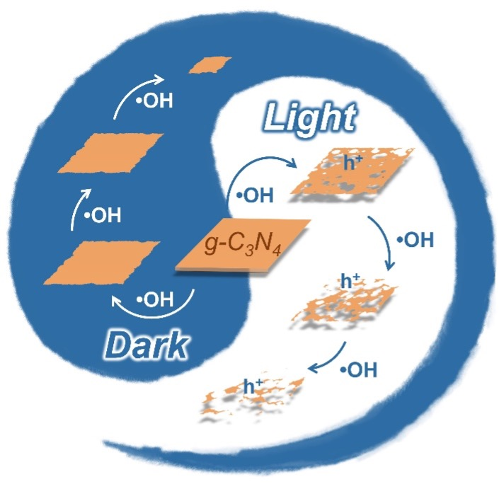
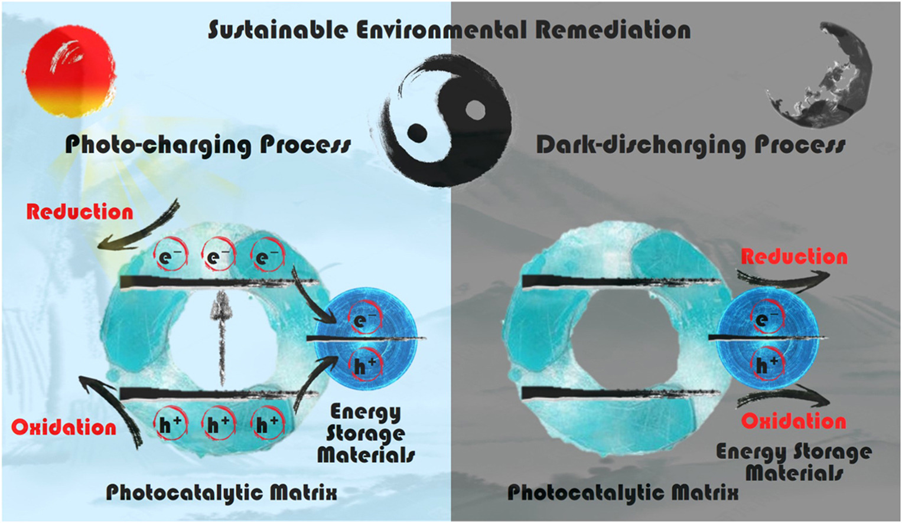
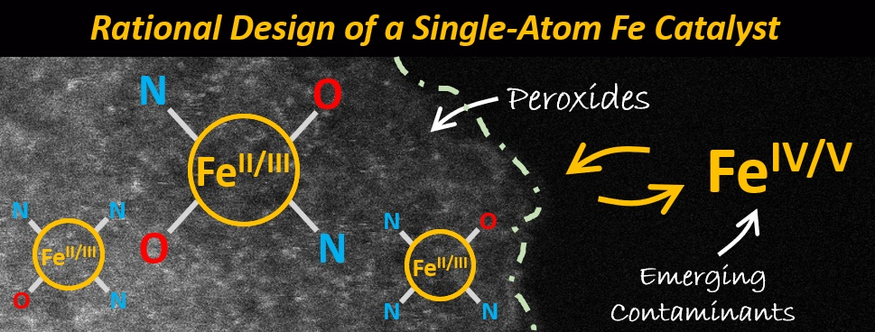
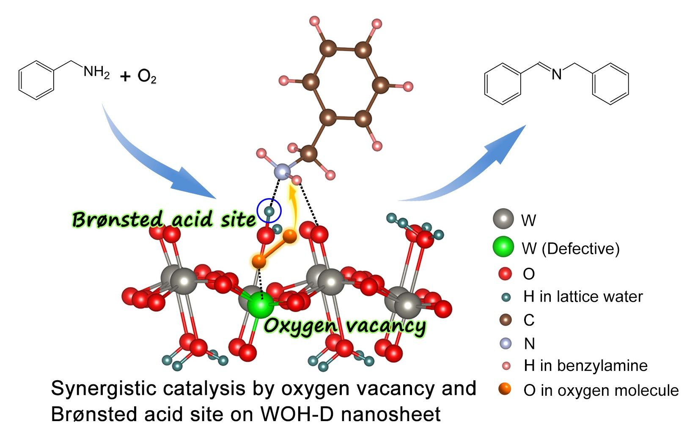
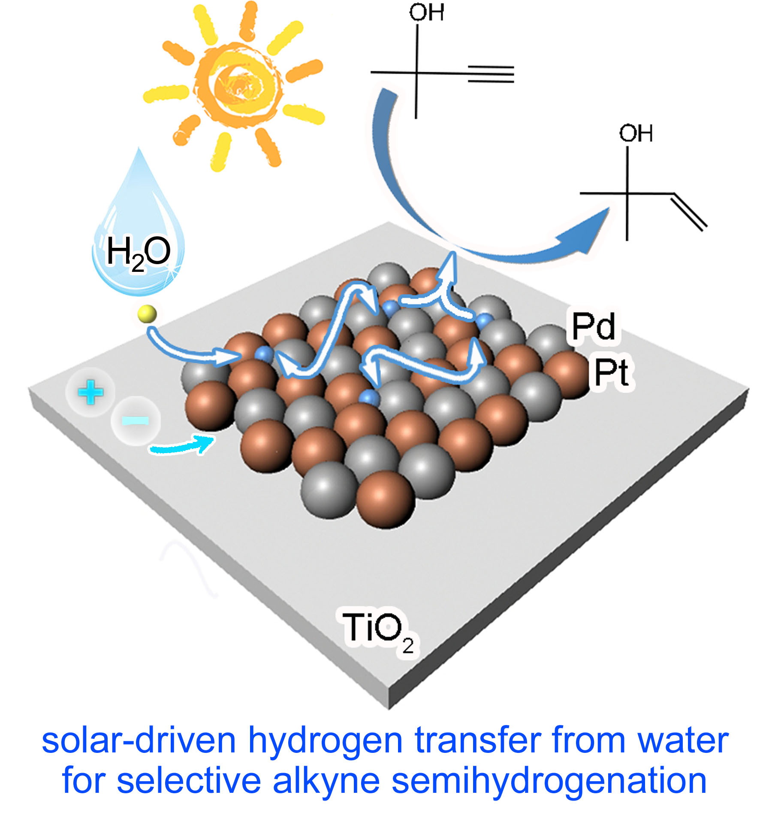

Publications
Research ID: AAQ-4205-2021
Journal Articles (in chronological order): * Corresponding Author
7. Radical-driven decomposition of graphitic carbon nitride nanosheets: light exposure matters.
M. Li, D. Liu, X. Chen, Z. Yin, H. Shen, A. Aiello, K. R. McKenzie Jr, N. Jiang, X. Li, M. J. Wagner, D. P. Durkin*, H. Chen*, D. Shuai*. Environ. Sci. Technol. 2021,

6. Continuous photocatalysis via photo-charging and dark-discharging for sustainable environmental remediation: Performance, mechanism, and influencing factors.
C. Zhang, Y. Li*, M. Li, D. Shuai, X. Zhou, X. Xiong, C. Wang*, Q. Hu. J. Hazard. Mater. 2021, 420, 126607. (https://doi.org/10.1016/j.jhazmat.2021.126607)

5. Single-Atom catalysis for oxidizing contaminants of emerging concern via high-valent Fe species.
Z. Zhou, M. Li, C. Kuai, Y. Zhang, V. F. Smith, F. Lin, A. Aiello, D. P. Durkin*, H. Chen*, D. Shuai*. J. Hazard. Mater. 2021, 418, 126294. (https://doi.org/10.1016/j.jhazmat.2021.126294)

4. Chemical-enzymatic fractionation to unlock the potential of biomass-derived carbon materials for sodium ion batteries.
Y. Feng, L. Tao, Y. He, Q. Jin, C. Kuai, Y. Zheng, M. Li, Q. Hou, Z. Zheng, F. Lin*, and H. Huang*. J. Mater. Chem. A 2019, 7, 26954-26965.
(https://doi.org/10.1039/C9TA09124F)
3. Recent Progress on Electrocatalyst and Photocatalyst Design for Nitrogen Reduction (invited Review article)
M. Li, H. Huang, J. Low, C. Gao, R. Long*, Y. Xiong*. Small Method 2019, 3, 1800388. (https://doi.org/10.1002/smtd.201800388)

2. Defective Tungsten Oxide Hydrate Nanosheets for Boosting Aerobic Coupling of Amines: Synergistic Catalysis by Oxygen Vacancies and Brønsted Acid Sites
N. Zhang, X. Li, Y. Liu, R. Long, M. Li, S. Chen, Z. Qi, C. Wang, L. Song, J. Jiang, Y. Xiong*. Small 2017, 13, 1701354.(https://doi.org/10.1002/smll.201701354)

1. PdPt Alloy Nanocatalysts Supportesd on TiO2: Maneuvering Metal-Hydrogen Interactions for Light-Driven and Water-Donating Selective Alkyne Semihydrogenation
M. Li, N. Zhang, R. Long*, W. Ye, C. Wang, Y. Xiong*. Small 2017, 13, 1604173. (https://doi.org/10.1002/smll.201604173)
